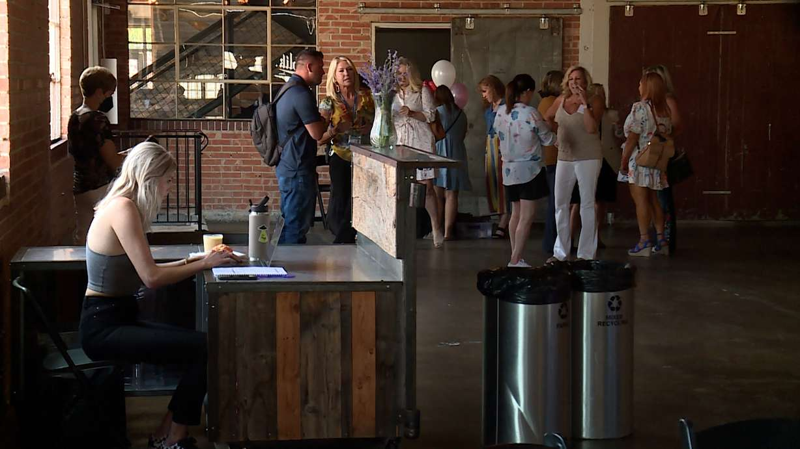

No matter how many times she changed her script just before her speech, Stacy Symons was still a little nervous. Even though it was her life story, it's still tough to tell it in front of so many people.
"I wanted to do this because it's been a long time and I want to let others know what happened to me," said Symons. "I wasn't able to self-identify myself as a sex trafficking victim until after I had even gotten clean from meth, which was years after I had been trafficked."
It's the kind of story that makes people stop whatever they're doing.
During the luncheon in Salt Lake City where she spoke Thursday afternoon, no one was eating while she spoke.
"As a teenager, before even being trafficked, when I was raped at 16. I didn't even know what rape was," she said.
Symons, who grew up in South Jordan, knows her story is a tough one to hear. However, it's also a powerful and hopeful story because Symons escaped trafficking and has been drug-free for six years. She said it's all because she got help.
"I feel the most empowered and the strongest and the most secure that I have ever felt in my life," said Symons.
 People attend a luncheon in Salt Lake City on Thursday to learn about sex trafficking in Utah. (Photo: Winston Armani, KSL-TV)That empowerment is exactly what the luncheon was about.
Board members of the Aspen Magdalene House in Salt Lake City organized this event and called it a "lunch and learn" with the goal of giving an overview of sex trafficking in Utah.
The group said Utah is one of the top 10 states in the U.S. for sex trafficking.
Sgt. Jodie Sampson, who works with the Unified Police Department's Metro Mental Health Unit, said it's a growing issue in Utah as the state's population continues to increase.
"It has no boundaries. Everyone always thinks it happens on the other side of the tracks and in fact, it doesn't happen on the other side of the tracks. It can happen next door," said Sampson.
Sampson is passionate about getting the proper mental health assistance to trafficking victims. She said it makes a difference and has seen the improvement in people she has helped.
"It's all about resilience and being able to get the help that you need because there is help out there, but it takes that first step to be able to ask for it, and then to actually receive it," said Sampson.
That's why Symons felt it was important for her to speak during the luncheon.
She feels her recovery and healing, and realization of what happened to her, wouldn't have been possible without getting help.
"It's worth it because if it can help even one person from experiencing the kind of pain that I went through, then I will do it," she said.